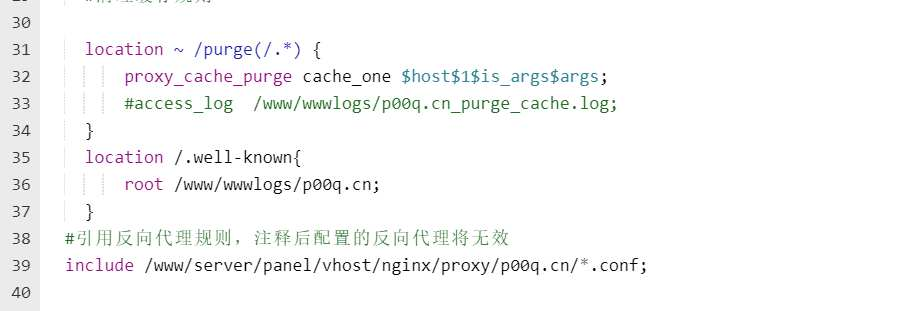

解决宝塔控制面板在开启全站反向代理时没法自动续签SSL的问题
- 作者:
- 淡白
- 创建时间：
- 2022-03-12 12:01:14
- nginx 宝塔面板 自动续签 ssl证书
摘要：文章介绍了免费SSL续签的方法。当使用宝塔的自动申请功能时，如果网站开启了反向代理，无法访问到验证文件。解决办法是在Nginx配置文件中添加 `/www/wwwlogs/p00q.cn` 替换你的网站根目录，然后通过访问网站路径 `/well-known/` 进行验证。当出现nginx403时，即可完成续签。
免费ssl续签
宝塔提供的一个自动向Let's Encrypt申请的免费ssl证书，有效期3个月。
所以在到期前1个月会自动重新申请，但如果你的网站开启了反向代理那么在验证时没法访问到放在你网站根目录下的验证文件。
解决办法
很简单，在你的位置设置里找到Nginx配置文件选项

在引用反向代理配置前一行添加

其中请将/www/wwwlogs/p00q.cn替换成你的网站根目录
location /.well-known{
root /www/wwwlogs/p00q.cn;
}
验证
访问一下你网站https://p00q.cn/.well-known/路径出现nginx403就好了
再尝试续签能正常完成即可。